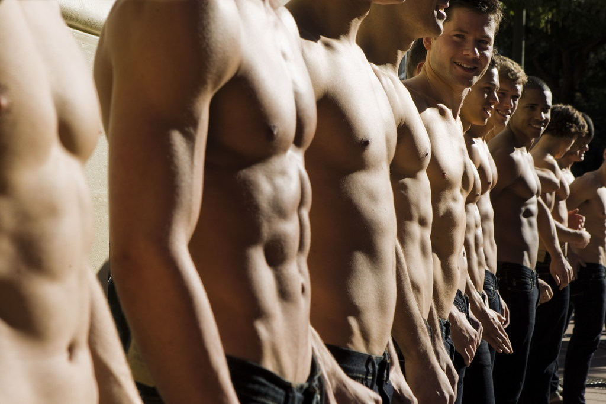

Hi, everyone. tonight we will talk about some scenarios which "I am used to it". It means that I did not feel it's wrong or abnormal, and even more i did feel it's right. Something that I never ask "why".
below it's the list about those scenarios.
-
topless
There are two photos:
- 
- Marriage: Do you believe in "one wife and one husband"?
- Punishment: What do you think about teachers and parents beat children?
- Tax and healthcare: Should we pay tax? should the "National Health Insurance" exist?
- School: Children should attend to the school, no matter it's good or not for them.
- Military service: Who should serve the country?
- Nice girls and bad boys: girl should be nice and quiet, boys should be aggresive and strong.
- Cigarette and Pixelization(Mosaic): Censor the anime which has the smoking scene.
- Bargin: Bargain for everything.
- Red Light: Right turn on a red light.
Maybe you have the same feeling or you totally have differnet opinion about these. You are welcome to share your personal experience with us. please give your own opinion about these questions. Also, do you know something else that people are used to it, but actually it should be challenged?